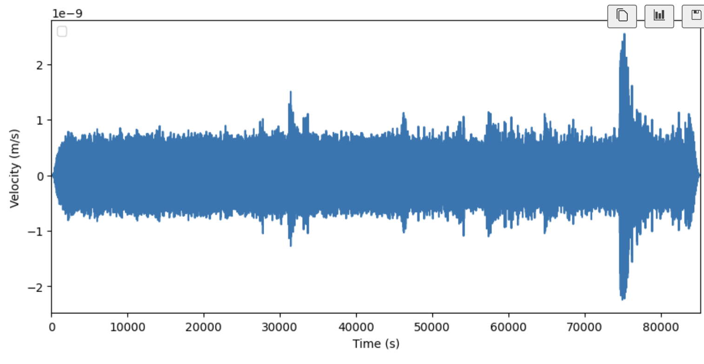

~~ Our Seismic Detector ~~
Mission Statement
Why did we make this?
Planetary seismology missions struggle with the power requirements necessary to send continuous seismic data back to Earth. But only a fraction of this data is scientifically useful! Instead of sending back all the data collected, what if we could program a lander to distinguish signals from noise, and send back only the data we care about? Our team took on the responsibility to write a computer program to analyze real data from the Apollo missions and the Mars InSight Lander to identify seismic quakes within the noise!
Programming
If you would like to see the code take a look at our GitHub!
Quick Explanation!
To begin, we collect data is through Excel (csv) formated files and mseed files. Mseed files are read through various Python libraries such as obspy. However, using tools such as panda we can exctract the information from the excel format.
Filepaths for the data can be fed into our code which will open and decode the data. Using Matplotlib we can produce a graph.
Here is an example of a graph created from one of the data files
Our team took a couple of approaches and created various algorithms. Our first algorithm calculates the power level of the seismic activity. The power level can then be graphed.
Large changes in the power levels are tracked and stored to determine a chance of seismic occurrence.
We have used a red line to mark where our algorithm thinks there is a large fluctuation in power.
We have also marked this red line on the original data graph below:
It continuously calculates the average values of the absolute amplitude of a seismic signal in two consecutive moving-time windows. The short time window (STA) is sensitive to seismic events while the long time window (LTA) provides information about the temporal amplitude of seismic noise at the site. When the ratio of both exceeds our predefined value, an event is 'declared' and data starts being recorded in a file.
Lasty our final algorithm starts by determining the absolute value of all the data points.
It then splits the data into a nths and calculates averages between all the n time intervals. We can graph how that looks for n as 1000 bellow:

Lastly an average of all the data is calculated (excluding values of 0) and anything above this average is recorded.
Now is where it gets a little interesting
We have just created 3 different methods to determine time intervals for the occurrence of seismic activity.
Lastly if we merge the three algorithms and look for overlap, there is a very good chance that the overlapping region is the occurance of seismic activity that needs to be isolated.
And that's a brief rundown of our program!